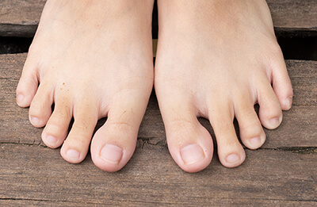
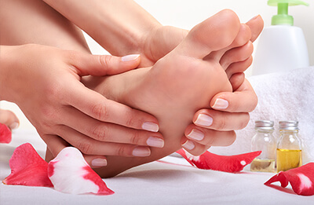
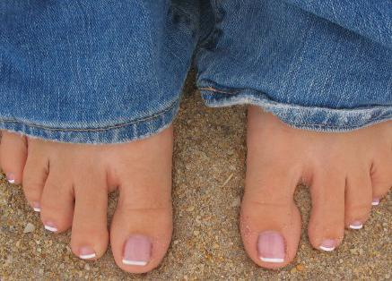

è la pubblicità
Come sbarazzarsi dell'infezione micotica dei piedi in maniera efficace: metodo semplice che funziona davvero
Ciao a tutti, sono di nuovo io! Voglio condividere con voi la mia felicità, finalmente mi sono liberata della terribile malattia di cui soffrivo. Mi ricordo ancora tutte le cose che ho dovuto provare prima di trovare questo fantastico metodo.
Circa un anno fa, ho scritto un post in cui vi dicevo che la mia vita era diventata un incubo. Ho 37 anni, sono una bella donna e ho molti ammiratori. Ma quando mi avvicino a un uomo, di solito tende a scappare più in fretta che può. Come è possibile? Tutto a causa della micosi ai piedi. All'inizio la nascondevo sotto calze spesse, ma poi ha iniziato a manifestarsi un odore terribile. In più, il prurito e la desquamazione della pelle stavano peggiorando sempre di più. Era insopportabile.
L'anno scorso, ho provato qualsiasi metodo esistente. Ho perso il conto di tutte le pillole e medicinali che ho preso, ma o avevano un effetto temporaneo o non funzionavano proprio. La parte più triste è che tutti i medici non sapevano come aiutarmi e mi suggerivano di provare delle pillole costosissime con un sacco di effetti collaterali. Non mi rimaneva niente da fare se non vendere l'auto e comprare un trattamento completo di medicinali antimicotici tedeschi. Al secondo mese di assunzione, ho cominciato ad avere dolori lancinanti al fegato. Allora ho deciso di rimanere poco attraente, ma almeno di restare in vita.
Ecco cosa mi ha salvata dalla micosi: un rimedio economico
Ho trovato la soluzione in modo inaspettato. Una vecchia amica mi ha parlato di una podologa certificata che mi avrebbe aiutata a liberarmi di questa cosa oscena. Di solito non accetta clienti affetti da micosi alle unghie, ma sono riuscita a convincerla acquistando dei nuovi strumenti che avrebbe potuto utilizzare su di me. Dopo aver esaminato le mie unghie, mi ha detto di provare lo antimicotico . Ha detto che in una settimana il mio problema sarebbe scomparso e che avrei dovuto prendere un appuntamento per allora. Ha anche suggerito di acquistare questo prodotto solo sul sito ufficiale del distributore , in modo da non rischiare d'imbattermi in un prodotto contraffatto che mi avrebbe solo fatto del male.
Onestamente, all'inizio non le credevo. Mi sembrava uno scherzo e temevo di rimanere delusa un'altra volta. Ma poi ho letto un sacco di recensioni positive circa questo prodotto e così ho deciso di provare . Inoltre, non costa molto, perciò non avevo nulla da perdere.
Il pacco è arrivato in fretta. L'ho aperto immediatamente e ho iniziato a leggere le istruzioni. Ecco come agisce il prodotto:
- Uccide il fungo in poco tempo riparando allo stresso tempo la pelle danneggiata e la superficie delle unghie.
- Calma l'irritazione e l'arrossamento. Lenisce la pelle e le fornisce vitamine e minerali.
- Ha un forte effetto preventivo. Impedisce la ricomparsa dell'infezione.
- Elimina istantaneamente l'eccessiva sudorazione e l'odore sgradevole combattendo la causa del problema.
- Riduce il gonfiore e normalizza la circolazione sanguigna.
- Restituisce elasticità alla pelle e le dà un colorito sano.
- Rallenta il processo di desquamazione della pelle grazie agli antiossidanti naturali.
L'infezione fungina scompare per sempre: i risultati sono visibili già dopo una settimana.
Ho cominciato a usare lo seguendo le istruzioni e le informazioni sul sito del fornitore . L'ho applicato due volte al giorno: la mattina prima di andare al lavoro e la sera prima di andare a letto. A essere sincera, non mi aspettavo affatto dei risultati miracolosi. Ma già la sera del primo giorno, ero meravigliata. Per la prima volta in molto tempo, non sentivo alcun cattivo odore dopo essermi tolta le scarpe. Le calze erano asciutte, l'arrossamento era fortemente diminuito: lo aveva fatto miracoli!
Dopo qualche settimana di utilizzo di , sono riuscita a liberarmi completamente del rossore e della pelle squamata. Tutte le aree danneggiate sono guarite più in fretta di quanto non mi aspettassi. E, cosa più importante, la piastra ungueale danneggiata ha cominciato a rigenerarsi. Dopo poco più di un mese di utilizzo, non c'era più traccia dell'infezione con cui avevo combattuto per anni. Il brutto aspetto, il cattivo odore e le zone arrossate erano spariti! La pelle è riuscita a rigenerarsi completamente e a diventare morbida, liscia e idratata.
Sono anche rimasta molto sorpresa dal fatto che questo antifungino contenga solo ingredienti naturali e dei potenti antiossidanti che aiutano a ringiovanire la pelle e a prevenirne l'invecchiamento. Se lo usate per scopi preventivi, allora il rischio di contrarre un'infezione fungina si riduce praticamente a zero.
Finalmente, mi sento alla grande. Non mi devo più preoccupare, la mia vita privata è migliorata notevolmente perché non ho niente da nascondere.
Solo una cosa però: ordinate questo prodotto solo sul sito ufficiale del distributore . Ci sono migliaia di fregature su internet. Usando il link indicato, avrete la sicurezza di non peggiorare la vostra condizione e di non sprecare soldi.
Grazie per l'attenzione, cari lettori. Spero che la mia storia vi sia utile per evitare di commettere i miei stessi errori. Chi avrebbe pensato che ci sarebbe voluto un anno prima di trovare una soluzione al mio problema per poi liberarsi dall'infezione in una settimana e mezza? Ho anche raccomandato lo a mia madre, così si è potuta sbarazzare dell'infezione che l'ha perseguitata per anni. Ci ha messo due mesi. Le infezioni gravi di solito guariscono in molto più tempo.